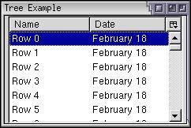

Custom Tree Views
The tree view holds the data to be displayed in the tree,
Creating a Custom View
So far, we have only been using the built-in content tree view. In this section, we will look at creating a custom view. This is necessary when the amount of data is large or arranged in a complex way. For instance, it just wouldn't be viable performance-wise to use treeitems when there are several thousand rows. You might also implement a custom view when you want to perform computations on the data to be displayed. Since the view can store and retrieve the data in the most suitable manner for the kind of data used, the tree can be used even when there are hundreds of thousands of rows to be displayed.
To implement a custom view, you will need to create an object which implements the nsITreeView interface. You can create these objects in JavaScript, but you will need a separate object for each tree. Naturally, since a custom tree view is being used, the content tree view will not be used, so the treeitem, treerow, and treecell elements will have no purpose since the custom view will get its data from elsewhere. Thus, you can just leave the treechildren element empty. The following example shows this:
<tree id="my-tree" flex="1">
<treecols>
<treecol id="namecol" label="Name" flex="1"/>
<treecol id="datecol" label="Date" flex="1"/>
</treecols>
<treechildren/>
</tree>To assign data to be displayed in the tree, the view object needs to be created which is used to indicate the value of each cell, the total number of rows plus other optional information. The tree will call methods of the view to get the information that it needs to display.
In general, although the tree view has thirty or so functions that may be implemented, you only need to implement the ones that the tree will call. Three methods that you should implement are listed below.
- rowCountThis property should be set to the total number of rows in the tree.
- getCellText( row , column )This method should return the text contents at the specified row and column. This will be called to display data for each cell. The rows are supplied as numeric values starting at 0. The columns are supplied as the values of the id attribute on the columns. In Mozilla 1.8 and later, the column will instead be a TreeColumn object.
- setTree( tree )This method is called once to set the tree element on the view.
Here is an example of defining such as object, which can be called whatever you want:
var treeView = {
rowCount : 10000,
getCellText : function(row,column){
if (column == "namecol") return "Row "+row;
else return "February 18";
},
setTree: function(treebox){ this.treebox = treebox; },
isContainer: function(row){ return false; },
isSeparator: function(row){ return false; },
isSorted: function(row){ return false; },
getLevel: function(row){ return 0; },
getImageSrc: function(row,col){ return null; },
getRowProperties: function(row,props){},
getCellProperties: function(row,col,props){},
getColumnProperties: function(colid,col,props){}
};The functions in the example not described above do not need to perform any action, but they must be implemented as the tree calls them to gather additional information.
This example can be used for an tree with 10000 rows. The contents of the cells in the first column will be set to the text 'Row X' where X is the row number. The contents of the cells in the second column will be set to 'February 18'. The if statement in the function getCellText compares the column to the text 'namecol'. This text 'namecol' corresponds to the id of the first treecol in the example above. This example is very simple of course -- in reality you would have more complex data in each cell.
The final step is to associate the view object with the tree. The tree has a property view, which can be assigned to the view object declared above. We can assign a value to this property at any time to set or change the view.
function setView()
{
document.getElementById('my-tree').view = treeView;
}The following presents the example together. An inline script has been used here to simplify the example. Normally, you would put the script in an external script file.
Example 8.4.1: Source<?xml version="1.0"?>
<?xml-stylesheet href="chrome://global/skin/" type="text/css"?>
<window title="Tree Example" id="tree-window"
xmlns="http://www.mozilla.org/keymaster/gatekeeper/there.is.only.xul"
onload="setView();">
<script>
var treeView = {
rowCount : 10000,
getCellText : function(row,column){
if (column == "namecol") return "Row "+row;
else return "February 18";
},
setTree: function(treebox){ this.treebox = treebox; },
isContainer: function(row){ return false; },
isSeparator: function(row){ return false; },
isSorted: function(row){ return false; },
getLevel: function(row){ return 0; },
getImageSrc: function(row,col){ return null; },
getRowProperties: function(row,props){},
getCellProperties: function(row,col,props){},
getColumnProperties: function(colid,col,props){}
};
function setView()
{
document.getElementById('my-tree').view=treeView;
}
</script>
<tree id="my-tree" flex="1">
<treecols>
<treecol id="namecol" label="Name" flex="1"/>
<treecol id="datecol" label="Date" flex="1"/>
</treecols>
<treechildren/>
</tree>
</window>
In the image, you can see two columns, each with data taken from the getCellText function. The setView function has been called in the onload handler for the window, but you could also set the view later if you wish. You can change the view at any time.
One thing to note is that the getCellText function is only called when necessary to display the contents. In the 10000 row example above, getCellText is only called for the cells that are currently displayed. In the image, only seven rows are displayed, the last only partially, so getCellText will be called only 14 times, one for each row and column. It is called for other rows when the user scrolls through them. This makes the tree much more efficient.
Note that the view object is also available for trees using the built-in content view. You can use this to get the cell labels and other information.
The nsITreeView interface lists all of the properties and methods that you can implement for the tree view. We'll look at more of these in the next section.
(Next) Next, we'll look at RDF which can be used to automatically populate trees.
Examples: 8.4.1